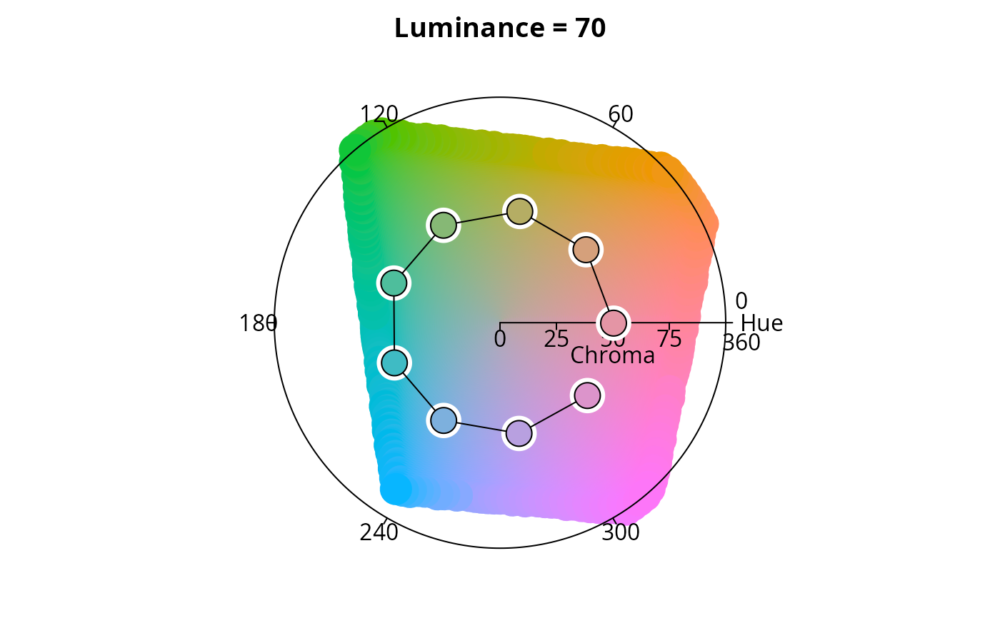
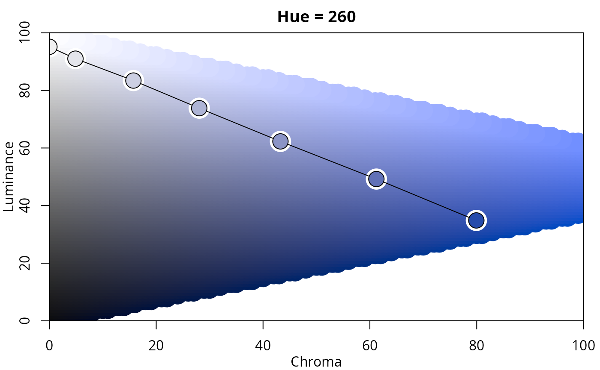
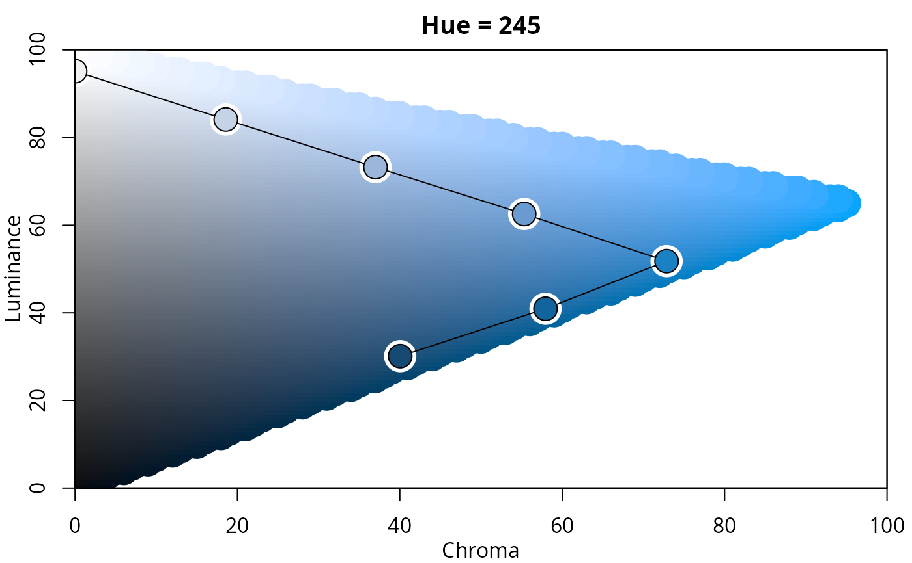
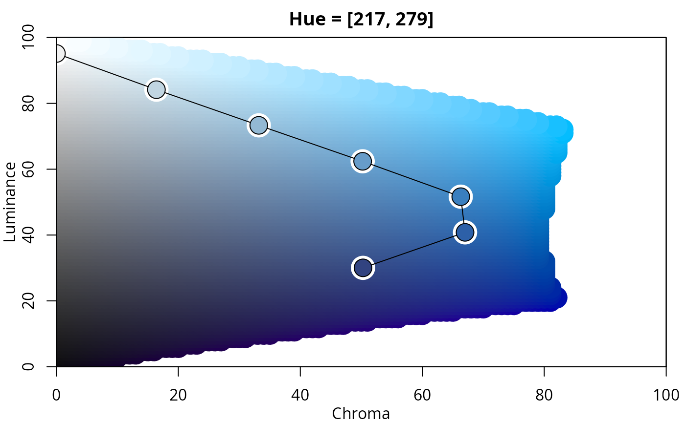
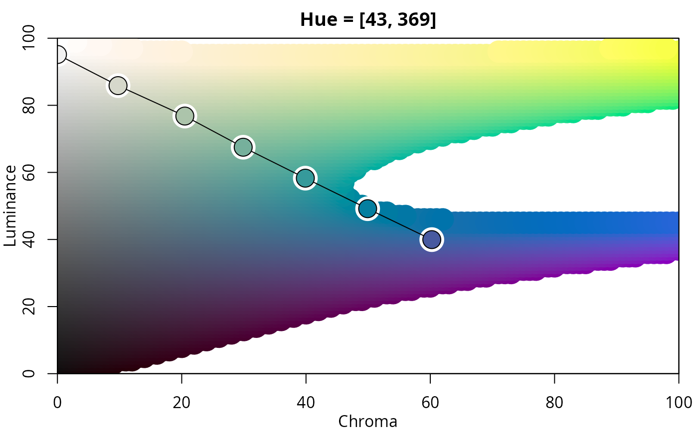

Palette Plot in HCL Space
hclplot.RdVisualization of color palettes in HCL space projections.
hclplot(
x,
type = NULL,
h = NULL,
c = NULL,
l = NULL,
xlab = NULL,
ylab = NULL,
main = NULL,
cex = 1,
axes = TRUE,
bg = "white",
lwd = 1,
size = 2.5,
...
)Arguments
- x
character vector containing color hex codes, or a
color-classobject.- type
type character specifying which type of palette should be visualized (
"qualitative","sequential", or"diverging"). For qualitative palettes a hue-chroma plane is used, otherwise a chroma-luminance plane. By default, thetypeis inferred from the luminance trajectory corresponding tox.- h
numeric hue(s) to be used for
type = "sequential"andtype = "diverging". By default, these are inferred from the colors inx.- c
numeric. Maximal chroma value to be used.
- l
numeric luminance(s) to be used for
type = "qualitative". By default, this is inferred from the colors inx.- xlab, ylab, main
character strings for annotation, by default generated from the type of color palette visualized.
- cex
numeric character extension.
- axes
logical. Should axes be drawn?
- bg, lwd, size
graphical control parameters for the color palette trajectory.
- ...
currently not used.
Value
hclplot invisibly returns a matrix with the HCL coordinates corresponding to x.
Details
The function hclplot is an auxiliary function for illustrating
the trajectories of color palettes in two-dimensional HCL space projections.
It collapses over one of the three coordinates (either the hue H or the
luminance L) and displays a heatmap of colors combining the remaining
two dimensions. The coordinates for the given color palette are highlighted
to bring out its trajectory.
The function hclplot has been designed to work well with the
hcl_palettes in this package. While it is possible to apply
it to other color palettes as well, the results might look weird or confusing
if these palettes are constructed very differently (e.g., as in the highly
saturated base R palettes).
More specifically, the following palettes can be visualized well:
Qualitative with (approximately) constant luminance. In this case,
hclplotshows a hue-chroma plane (in polar coordinates), keeping luminance at a fixed level (by default displayed in the main title of the plot). If the luminance is, in fact, not approximately constant, the luminance varies along with hue and chroma, using a simple linear function (fitted by least squares).hclplotshows a chroma-luminance plane, keeping hue at a fixed level (by default displayed in the main title of the plot). If the hue is, in fact, not approximately constant, the hue varies along with chroma and luminance, using a simple linear function (fitted by least squares.Diverging with two (approximately) constant hues: This case is visualized with two back-to-back sequential displays.
To infer the type of display to use, by default, the following heuristic is used: If luminance is not approximately constant (range > 10) and follows rougly a triangular pattern, a diverging display is used. If luminance is not constant and follows roughly a linear pattern, a sequential display is used. Otherwise a qualitative display is used.
References
Zeileis A, Fisher JC, Hornik K, Ihaka R, McWhite CD, Murrell P, Stauffer R, Wilke CO (2020). “colorspace: A Toolbox for Manipulating and Assessing Colors and Palettes.” Journal of Statistical Software, 96(1), 1--49. doi:10.18637/jss.v096.i01
See also
Examples
## for qualitative palettes luminance and chroma are fixed, varying only hue
hclplot(qualitative_hcl(9, c = 50, l = 70))

## single-hue sequential palette (h = 260) with linear vs. power-transformed trajectory
hclplot(sequential_hcl(7, h = 260, c = 80, l = c(35, 95), power = 1))
hclplot(sequential_hcl(7, h = 260, c = 80, l = c(35, 95), power = 1.5))

## advanced single-hue sequential palette with triangular chroma trajectory
## (piecewise linear vs. power-transformed)
hclplot(sequential_hcl(7, h = 245, c = c(40, 75, 0), l = c(30, 95), power = 1))

hclplot(sequential_hcl(7, h = 245, c = c(40, 75, 0), l = c(30, 95), power = c(0.8, 1.4)))
## multi-hue sequential palette with small hue range and triangular chroma vs.
## large hue range and linear chroma trajectory
hclplot(sequential_hcl(7, h = c(260, 220), c = c(50, 75, 0), l = c(30, 95), power = 1))

hclplot(sequential_hcl(7, h = c(260, 60), c = 60, l = c(40, 95), power = 1))

## balanced diverging palette constructed from two simple single-hue sequential
## palettes (for hues 260/blue and 0/red)
hclplot(diverging_hcl(7, h = c(260, 0), c = 80, l = c(35, 95), power = 1))